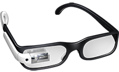

O Google Glass é um acessório em forma de óculos que possibilita a interação dos usuários com diversos conteúdos em realidade aumentada. Também chamado de Project Glass, o eletrônico é capaz de tirar fotos a partir de comandos de voz, enviar mensagens instantâneas e realizar vídeoconferências. Seu lançamento está previsto para 2014, e seu preço deve ser de US$ 1,5 mil. Atualmente o Google Glass encontra-se em fase de testes e já possui um vídeo totalmente gravado com o dispositivo. Além disso, a companhia de buscas registrou novas patentes anti-furto e de desbloqueio de tela para o acessório.
[AQUI ENTRA UMA FOTO]Não há uma data específica e oficial para o dispositivo ser lançado, ainda. Pode ser que ele esteja disponível em demonstrações a partir de 2013, mas seu lançamento para as lojas fica para, pelo menos, 2014.
De acordo com fontes próximas do Google, os óculos vão contar com uma pequena tela de LCD ou AMOLED na parte superior e em frente aos olhos do usuário. Com o uso de uma câmera e GPS, você pode se situar, assim como selecionar opções com o movimento da cabeça
O vídeo de divulgação do Google mostra que você pode se transformar em uma espécie de “super-humano”, já que o aparelho pode indicar a quantos metros você está de seu destino, se o metrô está aberto ou fechado, mostrar o clima, agenda e até mesmo permitir que você marque encontros apenas com comandos de voz.
O Google enfim revelou as especificações completas do Google Glass, e com ele uma surpresa ainda inédita no mercado: a gigante das buscas usará um sistema de áudio baseado na transdução por condução. Através das hastes dos óculos, o som será transmitido para o ouvido do usuário por meio de microvibrações em determinados ossos de sua cabeça, sem usar nenhum tipo de alto-falante.
Além da surpresa do áudio, a tela montada a frente do olho do usuário também chamou atenção. Serão 640 x 360 pixels de resolução que, em proporção, equivaleria a um monitor de 25 polegadas de alta definição colocado a 2,5 metros de distância do espectador.
Copyright 2013 - by Gustavo Guanabara Facebook | Twitter